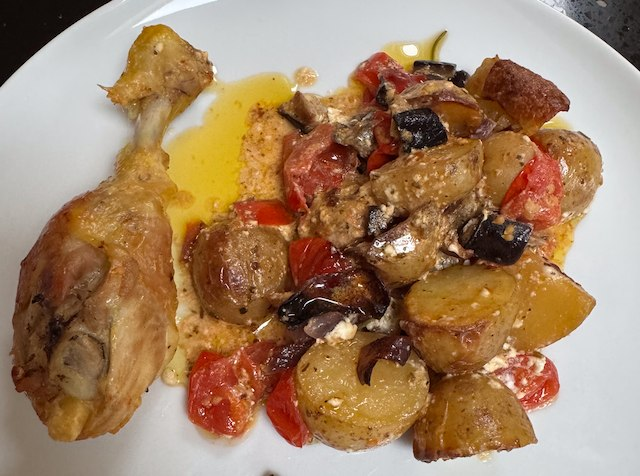

Greek Style Chicken Traybake

Serves: 4
Cook Time: 1 hour
From the Hairy Bikers
Ingredients
- 2 aubergines, diced
- 1 red pepper, diced
- 1 red onion, cut to wedges
- 1kg new potatoes, halved
- 3 tbsp olive oil
- 2 tbsp red wine vinegar
- 3 garlic cloves, thinly sliced
- 1 tsp, dried oregano
- 2 rosemary sprigs
- 1 chicken, cut to leg, thigh, breast and wings
- 220g cherry tomatoes, halved and salted
- 150g feta cheese, cubed
Method
Tray. Add aubergines, red pepper, red onion and potatoes to a tray. Add olive oil, vinegar, salt, pepper. Cook in oven for 50 min on 180°C fan.
After 20 min add salted chicken, garlic, oregano and rosemary. Turn oven up to 200°C .
With 10 min to go add feta and tomatoes.